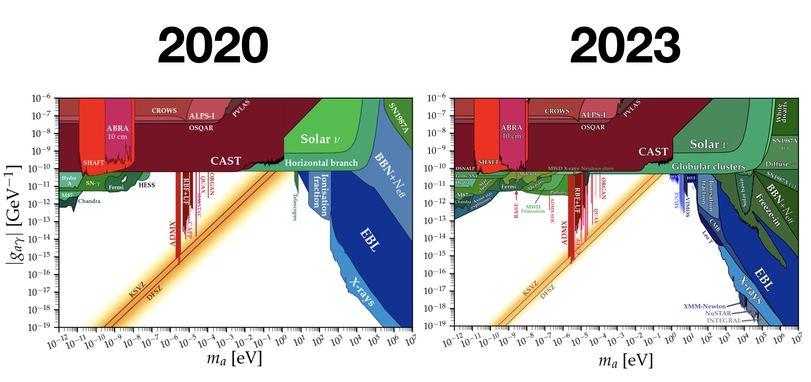

Courrier 007: アクシオン探索2023

アクシオンやそれに似た粒子の探索結果をまとめている AxionLimits をメンテナンスしている Ciaran O’Hare さんが、X (旧: Twitter) に2023年のまとめを投稿されていました。日本語訳をブログに投稿する許可を頂いたので、ここに書きます。論文の画像はこのページには載せないので、元のスレッドや論文を参照してください。論文は全て arXiv なので無料で読めます。
It's December, so time for my annual update from the world of axions. It’s been another busy year for maintaining my GitHub "AxionLimits" - my attempt to keep up with all of the people around the world desperately searching for these funny particles. https://t.co/j0os70F4o1 pic.twitter.com/LHUoMFPCHF
— Ciaran O'Hare (@cajohare) December 8, 2023
概略
AxionLimits で 2020年に作った最初のプロットと、2023年現在のものを比べたのが以下の図です。AxionLimits は現在400を超える論文からのデータを保持していて、その数は毎週増え続けています。

2020年と2023年のアクシオンに対する制限
2023年のハイライト
間接探索
光による探索
アクシオンが銀河のハローを構成している場合、2つの光子に崩壊し、銀河や blank sky のエネルギースペクトルで未知の輝線として観測できる可能性があります。
赤外線から紫外線の領域では、 超大型望遠鏡 (VLT) の MUSE、ハッブル宇宙望遠鏡、ジェイムズ・ウェッブ宇宙望遠鏡 (JWST) といった装置/望遠鏡による制限が付けられました。
- [2310.15395] Hunting Dark Matter Lines in the Infrared Background with the James Webb Space Telescope
- [2301.06560] Probing the Blue Axion with Cosmic Optical Background Anisotropies
- [2307.07403] Robust bounds on ALP dark matter from dwarf spheroidal galaxies in the optical MUSE-Faint survey
JWST によるアクシオン探索の最終到達地点も、 Roy et al. によって評価されました。
CMB による初期宇宙アクシオン探索
アクシオンが2光子に崩壊し、それが初期宇宙での熱源となったと仮定した場合の証拠を、宇宙マイクロ波背景放射 (CMB) のデータから探す2つの論文 (Capozzi et al., Liu et al.) が同じ日に発表されました。
- [2303.07426] CMB and Lyman-$α$ constraints on dark matter decays to photons
- [2303.07370] Exotic energy injection in the early universe II: CMB spectral distortions and constraints on light dark matter
アクシオン星
アクシオンの宇宙論的な痕跡としては、アクシオン星が考えられます。 Escudero et al. はアクシオン星がちょうどいいエネルギーの光子によってくすぐられると、爆発して宇宙を再電離させる可能性を示しました。
超新星による制限の修正
別の種類の爆発する星とアクシオンの関係として、 Diamond et al. は超新星爆発が期待通り複雑であることを示し、以前超新星 SN1987A によって付けられていたアクシオンに対する制限は、 fireball がアクシオンの脱出を妨げるため実際には制限になっていないことを報告しました。
直接探索
さあ実験の話です。韓国の基礎科学研究院 (IBS) の Center for Axion Precision Physics (CAPP) は一連の強磁場ハロスコープ (ハロー望遠鏡) でアクシオンの存在が許される領域を削り続けています。
アメリカの HAYSTAC 実験によっても新しい制限が付きました。HAYSTAC の特徴は squeezed state receiver という特殊な装置を用いて量子力学で決まるレベル以下にノイズを落としていることです。
O’Hare さんのいるオーストラリアにも、パースで行われている ORGAN 実験があります。 ORGAN のアクシオンハロスコープはこれまでで最高の周波数で動作しています。（訳注: 高周波数は低質量のアクシオンを探索することに対応します。）
逆に非常に低い周波数では、日本の DANCE 実験が初めての結果を今年得ました。彼らはきれいな弓形のキャビティを使い、レーザーを反跳させています。これはアクシオンがレーザーの偏光を回転させるというアイディアに基づいたものです。
あまり知られていないハロスコープに LIDA 実験があります。彼らは ナノ電子ボルトの質量領域を探索し、今年最初のリミットを付けました。
O’Hare さんの今年のお気に入りの新しいアイディアは WISPFI 実験です。この実験はアクシオンを実験室で生成するため、アクシオンがダークマターとして存在していなくても探すことができるというものです。これは light-shining-through-walls (訳注: 壁に向けて光を打って、光がアクシオンに変わると壁を透過できる) と呼ばれるコンセプトを中空糸コイルを用いて見直したものです。
実験室でアクシオンを作る別の方法として、日本の SAPPHIRES 実験のようにレーザービーム同士をぶつける方法があります。SAPPHIRES 実験も今年新しいリミットを付けました。
ダークフォトン
アクシオンをめぐる興奮から数年が経ち、多くのコラボレーションがパイロット実験を構築したところです。しかしながら、アクシオンを探すのは強力な磁石が必要なため難しいです。しかしさしあたり、アクシオン探索実験はダークフォトンを探すことでその機能を証明できます。ダークフォトンはアクシオンに似ていますが、磁場がなくても光子に変身できるという点が異なります。
ダークフォトン探索実験のひとつに、 GigaBREAD という食欲をそそる名前のものがあります。GigaBREAD は巧妙な円錐形の皿によってダークフォトンが変身した光子を1点に集中させて検出します。
中国のグループは超伝導高周波キャビティ (SRF Cavity) を使ってダークフォトンを探しています。
お次もクールなアイディアです。アクシオンやダークフォトンが非常に軽く、そのために非常に長い波長の光になると、離れた場所に設置された検出器を同期させてそれらを検出した方が良いかもしれません。
2つの独立したチームが離れた場所に置かれた磁力計のセットを使ってそのような実験を行いました。ひとつはアメリカの荒野の奥深くで行われた SNIPE Hunt、もうひとつは中国で行われた AMAILS です。
- [2306.11575] A Hunt for Magnetic Signatures of Hidden-Photon and Axion Dark Matter in the Wilderness
- [2305.00890] Search for dark photons with synchronized quantum sensor network
ダークフォトンは非常に興味深いものですが、強く制限もされています。制限を付ける一番良い方法のひとつは、星の進化に与える影響を考慮することです。
今年 Hiskens et al. はダークフォトンによる冷却を恒星進化モデルに導入し、これまでの赤色巨星やヘリウム燃焼星による制限が見直されました。
背景重力波
最後に、今年はナノヘルツの確率的背景重力波の兆候がいくつかのパルサータイミングアレイ (PTA) のコラボレーションで見つかり、それをめぐって大きな興奮がありました。
PTA はダークマター検出器でもあり、ナノヘルツ帯域以上の周波数で振動するスカラー場ダークマターに対しては最も強い制限を与えることが分かりました。
O’Hare さん自身の論文
O’Hare さん自身の今年の論文もあります。この論文ではハロスコープ内のアクシオン信号が何百もの狭いストリームで構成されることを予測しています。
結論
この分野の発展はとても速く、追い付くのは非常に大変です。地図だと分かりやすいでしょう。これがこれまでアクシオンなどを探索した人々です。この中のどれかがいつか成功し、この忌々しいウェブサイトのメンテナンスをやめられることを願っています。